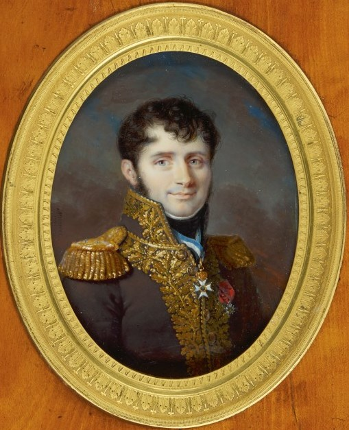
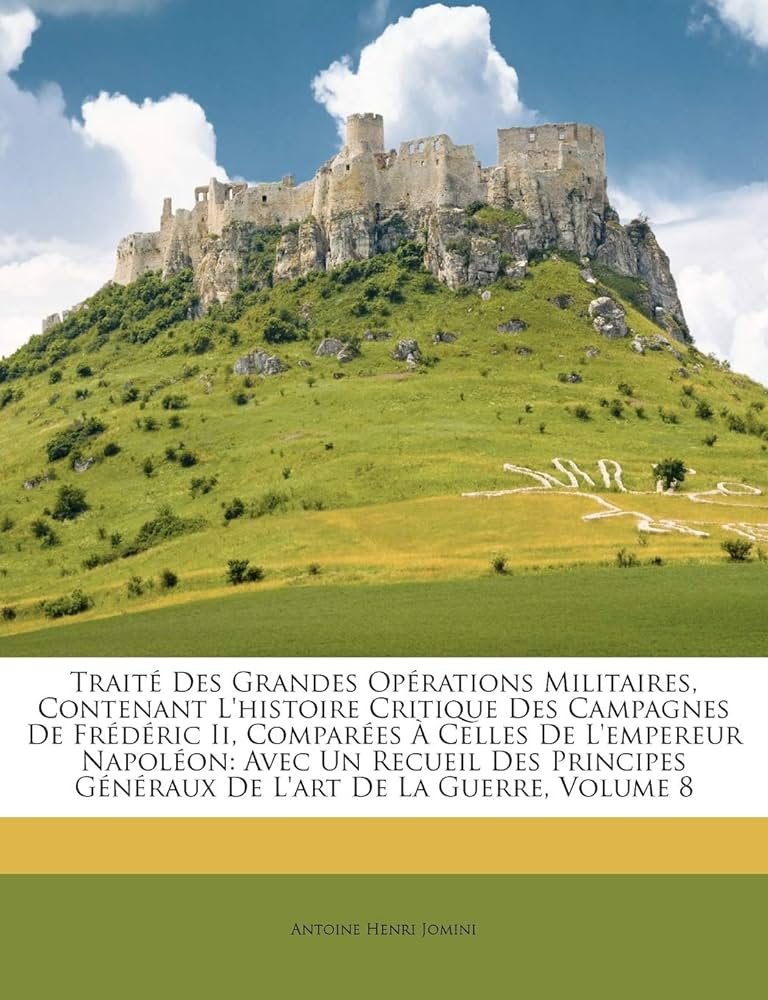
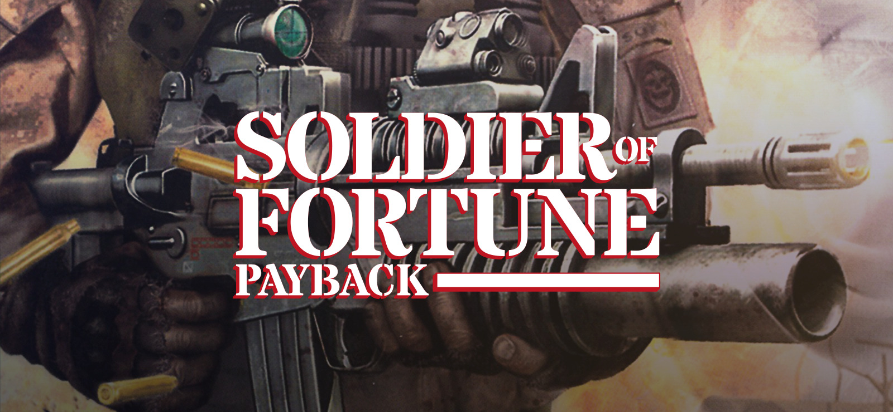
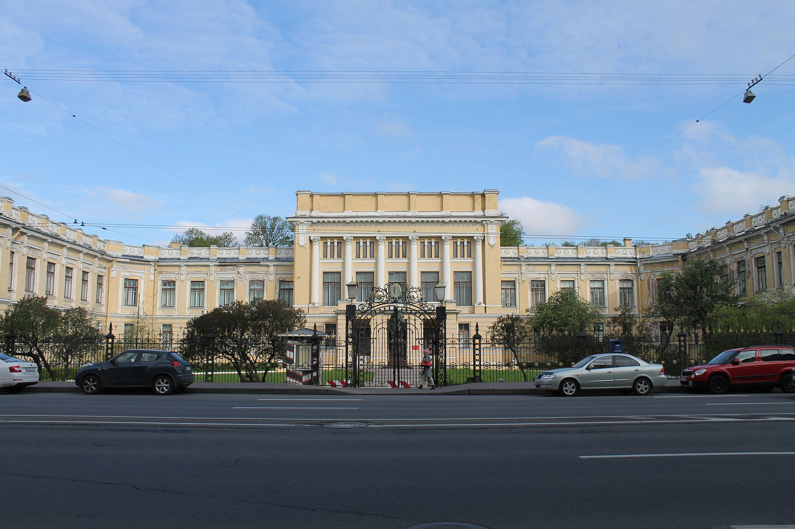
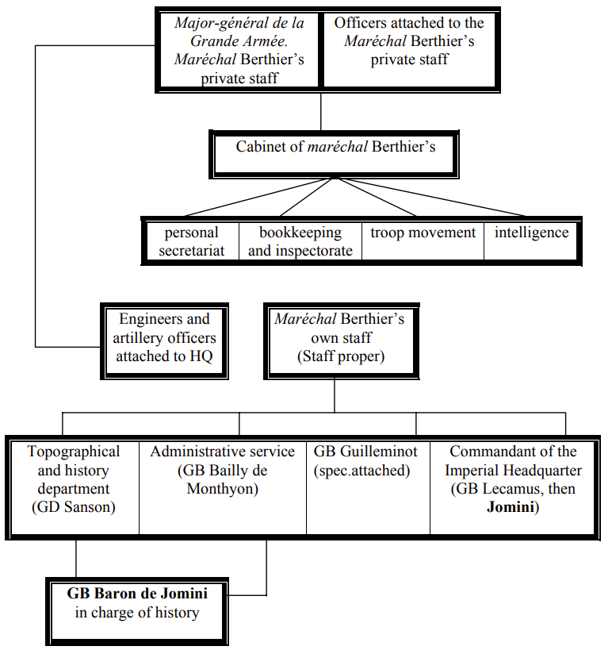
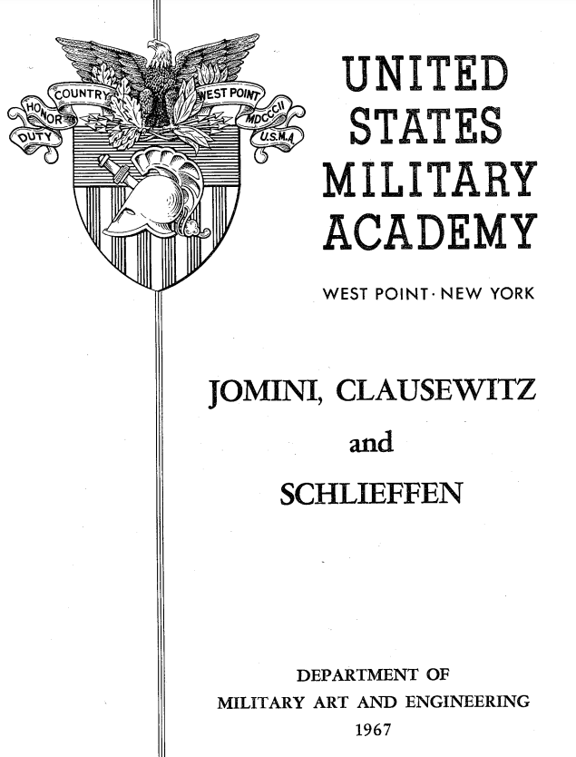

드레스덴을 향하여 (2) - 거물급 망명자
게시: 2023-12-18T06:30:54+09:00
스트리가우(Striegau)에서 랑제론의 러시아 전위대는 저 멀리서 정말 혼자서 길을 가던 프랑스군 한 명을 발견했습니다. 그렇쟎아도 제발 한 놈만 걸려라면서 애타게 프랑스군을 찾아 헤매던 러시아군은 그 프랑스군을 잡으러 뛰어갔는데, 그 프랑스군도 의외로 반갑게 러시아군에게 다가왔습니다. 게다가 군복을 보니 예사 사병이나 장교가 아니라, 장군이었습니다. 장군이 혼자서 이런 중립지대에서 대체 뭘 하고 있나 싶었는데, 그 스스로 밝히는 이름은 조미니(Antoine-Henri Jomini), 상당히 유명한 전략가였습니다.

(1811년 당시 조미니의 모습입니다. 1813년 그의 나이는 불과 34세, 정말 한창 나이였습니다.)
아직 중립지대인 이 지역에 원래 존재해서는 안되는 러시아군 부대를 만나 약간 놀랐던 조미니는 그 정찰대가 소속된 군단의 지휘관이 랑제론이라는 이야기를 듣고는 랑제론에게 편지를 써서 보냈습니다. 이 편지를 받아본 랑제론에게도 조미니는 잘 알려진 셀럽이었습니다. 랑제론도 조미니가 '군사작전 이론서'(Traité des grandes opérations militaires)라는 유명한 병법서의 저자라는 것을 잘 알고 있었던 것입니다. 조미니의 편지 내용은 '만나서 이야기하자'는 간단한 것이었습니다. 랑제론은 거부했습니다. 이유는 프랑스군이 그런 사절단을 보낸다는 핑계로 아군 진영 내로 들어와 상황을 염탐하려 한다고 생각했기 때문이었습니다.

(그의 이 저서는 총 5권으로서, 1804년 그는 첫 권의 집필을 마치고 그 출판을 금전적으로 후원해줄 사람을 찾고 있었습니다. 그때 그의 초본을 읽어보고 높이 평가하여 출판비를 대주었을 뿐만 아니라 나중에 자신의 참모로 삼아준 사람이 바로 네 원수였습니다. 그 뿐만 아니라 네는 나폴레옹에게 그를 직접 소개해준 은인이기도 했는데, 그런 네도 1808년 즈음에는 이 저 잘난 줄만 아는 참모가 자신에게 고마와 하기는 커녕 자신을 이용만 하고 있다고 생각하고 조미니의 장군 진급에 반대했습니다.)
그러면 돌아갈 줄 알았는데, 뜻밖에도 조미니는 염치도 없이 또 같은 내용의 편지를 보냈습니다. 랑제론은 살짝 짜증이 나서 다시 거절했습니다. 그러자 지치지 않고 세 번째 편지가 날아왔습니다. 이번에는 다소 충격적인 소식이 담겨 있었습니다. 조미니의 세 번째 편지는 '그게 아니고 내가 연합군으로 망명하려고 한다'라는 매우 뜻밖의 내용이었습니다. 조미니는 공식 국적 자체도 스위스인이긴 했지만, 1811년 태어난 그의 첫 아들 이름이 나폴레옹(Napoleon Charles Henri de Jomini)였을 정도로 나폴레옹의 총애를 받는 거물급 인물이었습니다. 나폴레옹이라는 이름은 아무 아기에게나 붙일 수 있는 것이 아니라 나폴레옹의 허락이 있어야 붙일 수 있는 이름이었거든요. 대체 왜 그런 인물이 갑자기 망명을 하겠다는 것이었까요? 전에도 설명한 적 있지만, 프랑스군 육군 준장(général de brigade)이었던 조미니는 실은 이때 이미 러시아 중장 계급을 겸직하고 있었습니다. 오스트리아 장군이 러시아군과 프로이센군을 지휘하던 당시에도, 이런 겸직은 상당히 이례적인 것이었습니다. 이렇게 된 과정에는 긴 사연이 있지만 일종의 군사 모험가, 그러니까 영어 표현으로는 soldier of fortune이었던 조미니 개인의 본질과 상관 있습니다. 어려서부터 하라는 공부는 안 하고 옛 이야기에 나오는 장군들의 위대한 전투와 전술 전략 등에 열광하던 조미니는 나폴레옹의 다른 부하들과는 애초에 군에 뛰어든 이유가 달랐습니다. 그는 열혈 혁명가도 아니었고 프랑스에 대한 애국심은 물론 없었으며 나폴레옹 개인에 대한 충성심이나 존경심도 그다지 많지 않았습니다. 그가 1805년 민간인 자원병의 형태로 프랑스군에 뛰어든 이유는 딱 하나, 본인이 좋아하는 일 즉 전쟁을 하면서 부와 명예를 누리고자 하는 것이었습니다. 실제로 그 해 12월, 그는 대령 계급을 받아냈습니다.

(Soldier of fortune은 '행운의 군인'이라는 뜻이 아닙니다. 여기서의 포츈은 행운이 아니라 재산을 뜻하는 것으로서, 솔져 오브 포츈이란 애국심이나 의무가 아니라 급료와 노략질을 통해 전쟁에서 돈을 벌어 보려는 모험 군인을 뜻하는 말입니다.)
그런데 아일라우 전투 등으로 힘들었던 제4차 대불동맹전쟁이 1807년 틸지트 조약과 함께 성공적으로 완료되자, 조미니는 자신의 능력과 성과에 비해 나폴레옹에게서 받는 대접이 충분치 않다는 불만을 가지게 되었습니다. 요즘 기업 환경에서라면 그렇게 불만이 있는 직원은 헤드헌팅 회사에 이력서를 돌렸을 것입니다. 그런데 조미니는 정말 이력서를 이제 동맹국이 된 러시아군에 제출했습니다. 1807년 베를린에서 만났던 러시아 볼콘스키 공작이 그에게 러시아군에서 일해보지 않겠냐고 그냥 지나가는 말로 제안을 하자 그걸 덥썩 물은 것입니다. 다만 아무리 동맹국이라고 해도 남의 군대에서 사람을 빼오는 것은 조심스러운 일이었기 때문에 한참 동안 러시아와 은밀히 물밑 협상을 하던 조미니는 마침내 1810년 중장으로의 승진과 작위 등 각종 보상에 대해 합의하고 정식으로 러시아군으로의 이직 요청서를 나폴레옹에게 제출했습니다. 여태까지 등한시했던 직원도 막상 고액 연봉 받고 다른 회사로 가겠다고 하면 아쉬운 법입니다. 나폴레옹은 조미니에게 준장으로의 승진과 함께 레종도뇌르(Légion d’Honneur) 훈장을 내리며 그의 러시아행을 막았습니다. 이건 약간 미묘한 문제였습니다. 1810년에는 이미 러시아와의 관계가 악화되고 있었는데, 조미니의 러시아군 이직을 막는 것은 알렉산드르와의 관계를 더욱 서먹하게 만들 수도 있었기 때문이었습니다. 그래서인지, 나폴레옹은 조미니에게 특별히 양군의 겸직을 허용했습니다. 즉 프랑스군 준장이자 러시아군 중장으로서 양측에서 봉급을 받았던 것입니다. 아마 러시아군에서는 휴직 급여(half-pay)를 받았을 것입니다.

(1918년 혁명 직전까지 제정 러시아의 최고 참모 학교이던 니콜라이 참모 학교입니다. 1832년 당시 짜르이자 알렉산드르 1세의 막내 동생이던 니콜라이 1세의 이름을 따서 만들어진 이 참모 학교의 건립에는 조미니도 창립 멤버로서 큰 몫을 했습니다. 원래 이 학교의 이름은 Akademiya general'nogo shtaba (영어로는 General Staff Academy)였는데 1855년 니콜라이 참모 학교로 이름이 바뀌었습니다. WW1까지 러시아군의 모든 참모는 이 학교 출신이었습니다.)
이런 투잡 신분이 1810년에는 별 문제가 되지 않았습니다만 1812년 러시아 침공이 임박하자 당연히 문제가 되었습니다. 조미니는 자신의 고용주이기도 한 러시아군과의 전투에는 직접 참여하는 대신, 후방에서 참모 역할과 연락망 구축 등으로 일했습니다. 다만 나폴레옹이 모스크바로부터 후퇴하게 되자 베레지나 일대에서 정찰 임무를 수행하는 등 일선 임무도 일부 수행하긴 했습니다. 1813년 봄, 조미니는 새로 편성된 마인(Mein)강 방면군에서 군단을 맡은 옛 상관 네(Michel Ney)의 참모직으로 다시 자리를 옮겨 본격적인 전투 임무에 투입되기 시작했습니다. 그리고 뤼첸 전투와 바우첸 전투에서 네를 도와 승리를 이끌어냈지요. 비록 상처뿐인 승리라고 해도 승리는 분명 승리였습니다. 네는 이 승리에 대한 포상으로 진급 대상자 명단을 작성하면서 조미니의 이름도 소장 진급 대상자로 써넣었습니다. 그런데, 여기에 딴지를 걸고 넘어진 사람이 있었습니다. 바로 나폴레옹의 참모장 베르티에였습니다. 바우첸 전투에서 네가 나폴레옹의 의도와는 조금 다르게 움직이는 바람에 결국 블뤼허의 프로이센군 주력을 포위섬멸하는데 실패했는데, 그 이유는 베르티에의 두리뭉실하고 너무 늦게 도착한 명령서 때문인지, 혹은 네의 참모장인 조미니가 명령서의 의도를 잘못 해석했기 때문인지 불분명한 점이 있었습니다. 이런 갈등은 5월말 조미니가 레이니에(Reynier)의 제5군단에게 보낸 네의 이동 명령서를 베르티에가 무효화시키고 다른 곳으로 배치시키면서 더욱 고조되었습니다. 설상가상으로, 이로 인해 베르티에에게 자신의 체면이 크게 깎이게 된 네도 전부터 감정이 그다지 좋지 않았던 조미니에 대해 몹시 불편한 마음을 갖게 되었습니다. 물론 이렇게 분위기가 안 좋다는 것만으로 조미니가 탈영이나 다름없는 망명을 택하지는 않았을 것입니다. 문제는 결국 네가 상주한 조미니의 승진이었습니다. 흔히 생각할 때 나폴레옹의 그랑다르메는 멋진 군복을 입고 전장에서 용기를 뽐내는 신사들의 사교 클럽처럼 느껴질 수도 있습니다만, 실은 요즘 사무직 직장에서보다 훨씬 더 고되고 빡빡한 직장 생활 같은 점이 더 많았습니다. 일단, 의외로 서류작업이 매우 많았습니다. 베르티에는 휘하 군단장들, 정확하게는 조미니 같은 군단 소속 참모들에게 5일마다 한 번씩 부대 현황 개요서를, 그리고 매월 1일과 15일에는 부대 상세 보고서를 제출하도록 요구했습니다. 베르티에도 괜히 참모들을 못 살게 굴려고 이러는 것은 아니었고 나폴레옹에게 항상 최신 부대 현황 보고서(Situation sommaire des troups)를 바쳐야 했기 때문에 그랬던 것입니다. 그런데 이게 말이 쉽지 컴퓨터는 커녕 타자기도 없고 각 부대와 연락할 전화기도 없는 환경에서, 그것도 온갖 전투, 보급 및 행정 업무의 산더미 속에서 그런 보고서를 만드는 것은 매우 어렵고 고된 일이었습니다. 특히 예하 부대들이 넓은 지역에 분산 배치되어 있을 경우엔 더욱 그랬습니다. 그러다보니 많은 참모들이 그런 보고서를 제때 보내지 못하고 하루 이틀 늦게 보내는 경우가 종종 있었습니다.

(조미니의 망명에 대해서는, 속좁은 베르티에가 조미니의 재능을 질투하여 모든 것을 망쳤다는 이야기도 있지만, 베르티에는 당시 조미니에게 질투를 느낄 정도의 위치가 아니었습니다. 그는 지금도 제대로 된 참모진의 창시자로 평가받는 인물로서, 당시 그는 지도-역사부, 행정부, 문서부, 황실 본부 참모부 등 독립적으로 움직이는 4개 참모부서를 혼자서 일일이 관장하고 있었습니다. 이건 보통 복잡한 일이 아니었고 엄청난 스트레스를 받는 격무였습니다. 그러니 바우첸 전투 직전에 베르티에가 약간 두리뭉실한 명령서를 몇 편 보냈다고 그를 비난하는 것은 좀 각박한 평가입니다. 조미니도 네의 제3군단에 배속되기 전에는 베르티에 밑에서 지도-역사부 일을 맡았습니다.)
조미니도 예외는 아니었습니다. 그가 참모를 맡고 있던 네의 제3군단 예하 부대 중 하나가 보고서를 늦게 보내는 바람에, 그도 부대 상세 보고서를 다소 늦게 제출해야 했는데, 베르티에는 이에 대해 크게 역정을 내며 '자신의 임무를 게을리한 조미니 장군에 대해 황제 폐하께서 크게 역정을 내셨다'라는 정식으로 질책하는 편지를 6월 20일 보내온 것입니다. 조미니는 별것도 아닌 잘못에 대해 괜히 시비를 건다며 크게 분개했습니다. 조미니가 베르티에의 편지로 인해 심한 스트레스를 받은 것은 그가 곧 소장으로 승진할 예정이기 때문이었습니다. 아니나 다를까, 곧 발표된 승진자 명단에는 제3군단에서만도 6백 명의 이름이 올라가 있었지만 그 속에 조미니의 이름은 없었습니다. 조미니도 쌓일 대로 쌓인 상태였습니다. 흔히 똑똑한 사람들에게 그런 경향이 많은데 그도 원래부터 오만하고 자존심이 매우 센 성격이었고, 그로 인해 주변 사람들과 알력도 많은 편이었습니다. 처음 외국 민간인에 불과했던 그의 재능을 알아보고 그를 참모로 채용했던 네 원수조차도 조미니의 그런 성격을 지긋지긋하게 여겨 그와 사이가 벌어졌을 정도였으니까요. 이런저런 갈등이 쌓인 조미니는 '내가 이런 곳에서 이런 푸대접을 받을 인재가 아니다'라며 8월 13일 친구에게 편지를 한 통 보내고는 그 다음날인 8월 14일 아침 정말 혼자서 연합군 진영을 향해 출발했던 것입니다. 조미니의 개인 참모였던 코흐(Koch)와 퐁-벨랑제(de Pont-Bellanger)는 덕분에 영문도 모른 채 프랑스 헌병들의 감시하에 놓이게 될 정도로 그의 망명은 갑자기 이루어졌습니다. 그런데 정말 조미니는 베르티에와의 갈등, 그리고 단지 승진이 누락되었다는 이유로 프랑스군을 버리고 러시아군으로 넘어갔을까요? 그는 파리에 와이프와 어린 아들 나폴레옹 앙리까지 남겨둔 채로 혼자 망명을 택했는데, 그의 가족들이 3~4주 후인 9월 중순에야 조미니를 찾아 오스트리아 수도 빈에 도착한 것을 보면 정말 홧김에 넘어간 것처럼 보이기도 합니다. 하지만 조미니는 그렇게 일시적인 흥분 때문에 중대한 결정을 내리는 사람은 아니었습니다. 그는 모난 성격 때문에 항상 주변 사람들, 심지어 직속 상관이자 은인인 네와도 알력을 겪어왔기 때문에 베르티에와의 갈등이 새삼스럽게 결정적인 역할을 했다고 보기는 어렵습니다. 조미니가 승진 누락 같은 하찮은 불만 때문에 연합군으로 망명했다는 것은 핑계에 불과하고, 탁월한 분석가인 조미니가 보기에도 8월 17일부터 시작될 추계 작전은 나폴레옹에게 절대적으로 불리하다는 것을 뜻하는 것이었습니다.

(조미니는 당대에도 매우 유명했습니다만, 그가 특히 유명해진 것은 미육군 사관학교에서 그의 이론서를 교재로 택하고 집중적으로 가르쳤기 때문이었습니다. 미국 남북전쟁은 양측 모두가 조미니의 이론으로 공부한 장군들끼리 조미니의 가르침에 따라 싸운 전쟁이라고도 할 수 있습니다.)
조미니의 망명 소식은 전부터 그의 재능을 탐내던 짜르 알렉산드르에게 큰 기쁨을 안겨주었습니다. 그는 즉각 당시 짜르가 있던 보헤미아의 수도 프라하로 불려갔는데, 그가 프라하에 도착한 것은 마침 전투 재개일이던 8월 17일이었습니다. 그런데, 그날 프라하의 짜르 알렉산드르 앞에 나타난 사람이 조미니만 있었던 것은 아니었습니다. 조미니보다 더 거물급이었던 그 인물은 과연 누구였을까요?
Source : The Life of Napoleon Bonaparte, by William Milligan Sloane Napoleon and the Struggle for Germany, by Leggiere, Michael V https://www.amazon.com/Op%C3%A9rations-Militaires-Contenant-Lhistoire-Campagnes/dp/1147116601 https://diginole.lib.fsu.edu/islandora/object/fsu:182659/datastream/PDF/view https://www.geni.com/people/Adelaide-Charlotta-Bsse-Jomini/6000000029664790952 https://en.wikipedia.org/wiki/General_Staff_Academy_(Russian_Empire)